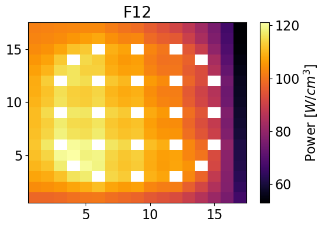
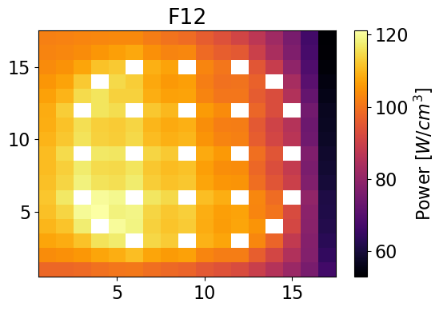

Flux and Power Reconstruction
Return to Two-Step Approach documentation.
The 2D nodal flux solutions are obtained using the analytic function expansion nodal method. Homogeneous corner-point flux values are found using a Fischer and Finnemann formulation.
from IPython.display import Image
import matplotlib.pyplot as plt
from matplotlib import rcParams
import numpy as np
FONT_SIZE = 16
plt.rcParams['figure.figsize'] = [6, 4]
from analytic_nodal_expansion import AFEN2D, meshPlot, GetSerpentRes
import serpentTools
from serpentTools.settings import rc
# Import relevant data from the lattice step calculations and NEM solution
import importnb
from importnb import imports
with imports("ipynb"):
import latticeParameters
from latticeParameters import cdf455, cdf260, ff455, ff260, surffluxhom
# read in data
detFile = './serpent/SMR/SMR_Ref_2D_2g_det0.m'
resFile = './serpent/SMR/SMR_Ref_2D_2g_res.m'
rc["serpentVersion"] = "2.2.1"
det = serpentTools.read(detFile)
xsF2, bcF2 = GetSerpentRes(resFile, 'F2', 0)
xsF11, bcF11 = GetSerpentRes(resFile, 'F11', 0)
xsF12, bcF12 = GetSerpentRes(resFile, 'F12', 0)
xsRef, bcRef = GetSerpentRes(resFile, 'Ref', 0)
bc = {'F2': bcF2, 'F11': bcF11, 'F12': bcF12, 'Ref': bcRef}
xs = {'F2': xsF2, 'F11': xsF11, 'F12': xsF12, 'Ref': xsRef}
npins = 17
dx, dy = 21.42, 21.42
Build out the heterogeneous flux boundary condition dictionary
bcflux = {}
for univ in bc: # defining BC for each universe
bcflux[univ] = {}
# store the heterogeneous surface and corner fluxes
bcflux[univ]['av'] = bc[univ]['flux']
bcflux[univ]['w'] = bc[univ]['wFlux']
bcflux[univ]['e'] = bc[univ]['eFlux']
bcflux[univ]['s'] = bc[univ]['sFlux']
bcflux[univ]['n'] = bc[univ]['nFlux']
bcflux[univ]['nw'] = bcflux[univ]['n']+bcflux[univ]['w']-bcflux[univ]['av']
bcflux[univ]['ne'] = bcflux[univ]['n']+bcflux[univ]['e']-bcflux[univ]['av']
bcflux[univ]['sw'] = bcflux[univ]['s']+bcflux[univ]['w']-bcflux[univ]['av']
bcflux[univ]['se'] = bcflux[univ]['s']+bcflux[univ]['e']-bcflux[univ]['av']
Calculate the homogeneous corner-point fluxes using the heterogeneous surfaces fluxes and assembly CDFs
# Build homogeneous flux bc dictionary
bcfluxhom = {}
for univ in bc:
bcfluxhom[univ] = {}
bcfluxhom[univ]['av'] = bc[univ]['flux']
# Assign homogeneous surface fluxes from NEM solution
bcfluxhom[univ]['w'] = surffluxhom[univ]['w']
bcfluxhom[univ]['e'] = surffluxhom[univ]['e']
bcfluxhom[univ]['s'] = surffluxhom[univ]['s']
bcfluxhom[univ]['n'] = surffluxhom[univ]['n']
# Heterogeneous surface flux BCs
# bcfluxhom[univ]['w'] = bc[univ]['wFlux']
# bcfluxhom[univ]['e'] = bc[univ]['eFlux']
# bcfluxhom[univ]['s'] = bc[univ]['sFlux']
# bcfluxhom[univ]['n'] = bc[univ]['nFlux']
# Calculate homogeneous cornerpoint fluxes
# F12
bcfluxhom['F12']['ne'] = (bcflux['F12']['ne'] + bcflux['Ref']['nw'])/(2*cdf260)
bcfluxhom['F12']['nw'] = (bcflux['F12']['nw'])/(cdf260)
bcfluxhom['F12']['sw'] = (bcflux['F12']['sw'] + bcflux['F2']['nw'])/(2*cdf260)
bcfluxhom['F12']['se'] = (bcflux['F12']['se'] + bcflux['Ref']['sw']+
bcflux['F2']['ne'] + bcflux['F11']['nw'])/(4*cdf260)
# F2
bcfluxhom['F2']['ne'] = (bcflux['F12']['se'] + bcflux['Ref']['sw']+
bcflux['F2']['ne'] + bcflux['F11']['nw'])/(4*cdf455)
bcfluxhom['F2']['nw'] = (bcflux['F12']['sw'] + bcflux['F2']['nw'])/(2*cdf455)
bcfluxhom['F2']['sw'] = (bcflux['F2']['sw'])/(cdf455)
bcfluxhom['F2']['se'] = (bcflux['F2']['se'] + bcflux['F11']['sw'])/(2*cdf455)
# F11
bcfluxhom['F11']['ne'] = (bcflux['F11']['ne'] + bcflux['Ref']['se'])/(2*cdf260)
bcfluxhom['F11']['nw'] = (bcflux['F12']['se'] + bcflux['Ref']['sw']+
bcflux['F2']['ne'] + bcflux['F11']['nw'])/(4*cdf260)
bcfluxhom['F11']['sw'] = (bcflux['F2']['se'] + bcflux['F11']['sw'])/(2*cdf260)
bcfluxhom['F11']['se'] = (bcflux['F11']['se'])/(cdf260)
Develop flux solutions for fuel assemblies using specified assembly and AFEN method
xvals = np.linspace(-dx/2, +dx/2, npins+1)
xvals = 0.5*(xvals[1:]+xvals[0:-1])
yvals = xvals
universes = ['F2', 'F12', 'F11']
homogeneousFlux = {}
pinPower = {}
for idx, univId in enumerate(universes):
homogeneousFlux[univId] = {}
univres = AFEN2D(xs[univId], bcfluxhom[univId], dx, symbolic=False)
univres.ReconstructFlux()
univres.GetFlux2D(xvals, yvals)
homogeneousFlux[univId] = univres.flux2d
# Compute power
if univId == 'F2':
pinPower[univId] = univres.ReconstructPower(homogeneousFlux[univId], ff455)
elif univId in ['F11', 'F12']:
pinPower[univId] = univres.ReconstructPower(homogeneousFlux[univId], ff260)
Generate data for reference solution power distribution
# F2
fastHetFluxF2 = det.detectors['flux_fast'].tallies[0:npins, 0:npins]
thermalHetFluxF2 = det.detectors['flux_thermal'].tallies[0:npins, 0:npins]
fastPowerF2 = det.detectors['power_fast'].tallies[0:npins, 0:npins]
thermalPowerF2 = det.detectors['power_thermal'].tallies[0:npins, 0:npins]
totalPowerF2 = fastPowerF2 + thermalPowerF2
# F11
fastHetFluxF11 = det.detectors['flux_fast'].tallies[0:npins, npins:]
thermalHetFluxF11 = det.detectors['flux_thermal'].tallies[0:npins, npins:]
fastPowerF11 = det.detectors['power_fast'].tallies[0:npins, npins:]
thermalPowerF11 = det.detectors['power_thermal'].tallies[0:npins, npins:]
totalPowerF11 = fastPowerF11 + thermalPowerF11
# F12
fastHetFluxF12 = det.detectors['flux_fast'].tallies[npins:, 0:npins]
thermalHetFluxF12 = det.detectors['flux_thermal'].tallies[npins:, 0:npins]
fastPowerF12 = det.detectors['power_fast'].tallies[npins:, 0:npins]
thermalPowerF12 = det.detectors['power_thermal'].tallies[npins:, 0:npins]
totalPowerF12 = fastPowerF12 + thermalPowerF12
Plot power distributions for reference and reconstructed
meshPlot(totalPowerF2, npins, universes[0], 'power')
meshPlot(pinPower['F2'], npins, universes[0], 'power')
meshPlot(totalPowerF12, npins, universes[1], 'power')
meshPlot(pinPower['F12'], npins, universes[1], 'power')
meshPlot(totalPowerF11, npins, universes[2], 'power')
meshPlot(pinPower['F11'], npins, universes[2], 'power')
 



Build relative error plots
totalPowerF2 = np.where(totalPowerF2 == 0, np.nan, totalPowerF2)
errorF2 = 100*(totalPowerF2-pinPower['F2'])/(totalPowerF2)
totalPowerF12 = np.where(totalPowerF12 == 0, np.nan, totalPowerF12)
errorF12 = 100*(totalPowerF12-pinPower['F12'])/(totalPowerF12)
totalPowerF11 = np.where(totalPowerF11 == 0, np.nan, totalPowerF11)
errorF11 = 100*(totalPowerF11-pinPower['F11'])/(totalPowerF11)
meshPlot(errorF2, npins, 'F2', 'relative error', cmap='coolwarm')
meshPlot(errorF12, npins, 'F12', 'relative error', cmap='coolwarm')
meshPlot(errorF11, npins, 'F11', 'relative error', cmap='coolwarm')


errorF2 = np.nan_to_num(errorF2)
maxErrorF2 = np.max(errorF2)
averageAbsErrorF2 = np.average(np.abs(errorF2))
print(f"The maximum error is {maxErrorF2}% and the mean absolute error is {averageAbsErrorF2}%.")
The maximum error is 5.867936391468032% and the mean absolute error is 1.1390347278271205%.
errorF12 = np.nan_to_num(errorF12)
maxErrorF12 = np.max(errorF12)
averageAbsErrorF12 = np.average(np.abs(errorF12))
print(f"The maximum error is {maxErrorF12}% and the mean absolute error is {averageAbsErrorF12}%.")
The maximum error is 14.16044533652908% and the mean absolute error is 2.6383209518641477%.
errorF11 = np.nan_to_num(errorF11)
maxErrorF11 = np.max(errorF11)
averageAbsErrorF11 = np.average(np.abs(errorF11))
print(f"The maximum error is {maxErrorF11}% and the mean absolute error is {averageAbsErrorF11}%.")
The maximum error is 14.18504491205774% and the mean absolute error is 2.632173609101986%.